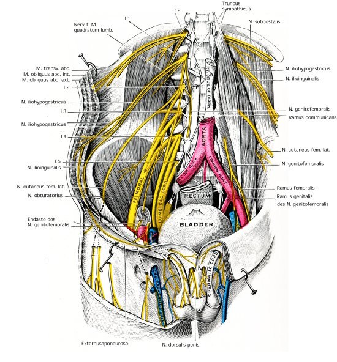

You are here: Urology Textbook > Anatomy > Abdominal cavity > Nervous system
Anatomy of the Abdominal Cavity: Nerves (2/4)
- Anatomy of the abdominal cavity: Muscles (1/4)
- Anatomy of the abdominal cavity: Nervous system (2/4)
- Anatomy of the abdominal cavity: Arteries (3/4)
- Anatomy of the abdominal cavity: Veins and lymphatic system (4/4)
Innervation of the Abdominal Wall
Branches from the lumbar plexus and from T7–T12 provide motor and sensory innervation of the abdominal wall, see fig. nerves of the abdominal wall.
Subcostal Nerve:
Latin: N. subcostalis. From T12, runs under the 12th rib, ventral of the M. quadrator lumborum and supplies the abdominal wall with sensory and motor innervation. It is endangered by the lumbar access to the kidney, especially with a subcostal flank incision.
Iliohypogastric Nerve:
Latin: N. iliohypogastricus. From L1, passes through the M. psoas major and then ventral of the M. quadratus lumborum into the lateral abdominal wall with sensory and motor innervation.
Ilioinguinal Nerve:
Latin: N. ilioinguinalis. From L1, it runs caudal and parallel to the iliohypogastric nerve. The nerve provides sensory innervation to the inguinal canal and the scrotum. The ilioinguinal nerve is at risk during an inguinal incision.
Genitofemoral Nerve:
Latin: N. genitofemoralis. From L1–L2, runs caudally on the psoas muscle and divides into a genital branch and femoral branch. The genital branch supplies the spermatic cord and the scrotum with motor and sensory innervation. The femoral branch provides sensory innervation in the area of the saphenous hiatus.
Lateral Femoral Cutaneus Nerve:
Latin: N. cutaneus femoris lateralis. From L2–L3, runs over the medial iliacus muscle to the iliac crest, anterior superior iliac spine, under the inguinal ligament to the lateral and ventral thigh, which he supplies with sensory innervation.
Obturator Nerve:
Latin: N. obturatorius. From L2–L4, runs caudally at the medial border of the psoas muscle, then under the vasa ilacae communes, and between the external and internal iliac vessels through the obturator canal to the adductor muscles. The obturator nerve is responsible for the motoric innervation of the adductor muscles and sensory innervation of the skin of the medial aspect of the thigh.
Femoral Nerve:
Latin: N. femoralis. From L1–L4, the strongest nerve of the lumbar plexus. The femoral nerve runs between psoas and iliac muscle through the lacuna musculorum (under the inguinal ligament) into the ventral thigh musculature. The femoral nerve is responsible for the motoric innervation of the hip flexors (iliopsoas muscle) and the extensors of the thigh (e.g. quadrizeps femoris and sartorius muscle). In addition, he carries the sensory innervation of the skin of the ventral thigh und medial lower leg. The biggest sensory branch is the saphenous nerve.
|  |
| Muscles Abdomen (1/4) | Index | Arteries Abdomen (3/4) |
Index: 1–9 A B C D E F G H I J K L M N O P Q R S T U V W X Y Z
References
- Benninghoff 1993 BENNINGHOFF, A.:
- Makroskopische Anatomie, Embryologie und Histologie des
Menschen.
15. Auflage.
München; Wien; Baltimore : Urban und Schwarzenberg, 1993
 Deutsche Version: Anatomie Abdomen: Nerven
Deutsche Version: Anatomie Abdomen: Nerven